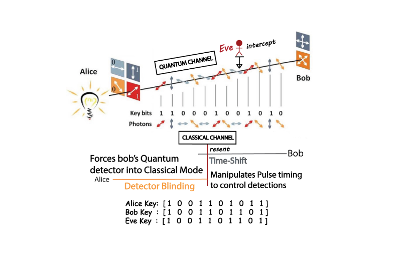

This Senior Design Project investigates critical hardware vulnerabilities in **BB84 Quantum Key Distribution (QKD)** systems. While QKD is theoretically secure, real-world hardware imperfections in gated avalanche photodiodes (APDs) create exploitable side channels. I co-developed the **Dual-Phase Exploit**, a sophisticated hacking strategy that merges Detector Blinding and Time-Shift attacks to extract cryptographic keys with high efficiency while maintaining a stealthy Quantum Bit Error Rate (QBER).
The primary engineering challenge was simulating complex quantum-mechanical interactions using classical computational tools. We had to model high-intensity continuous wave (CW) light interference to force detectors into classical linear modes and precisely manipulate photon arrival times to exploit detector efficiency mismatches—all within a unified simulation framework that accurately reflects realistic QKD noise and error thresholds.
Full project report and simulation logic available upon request for authorized academic review.